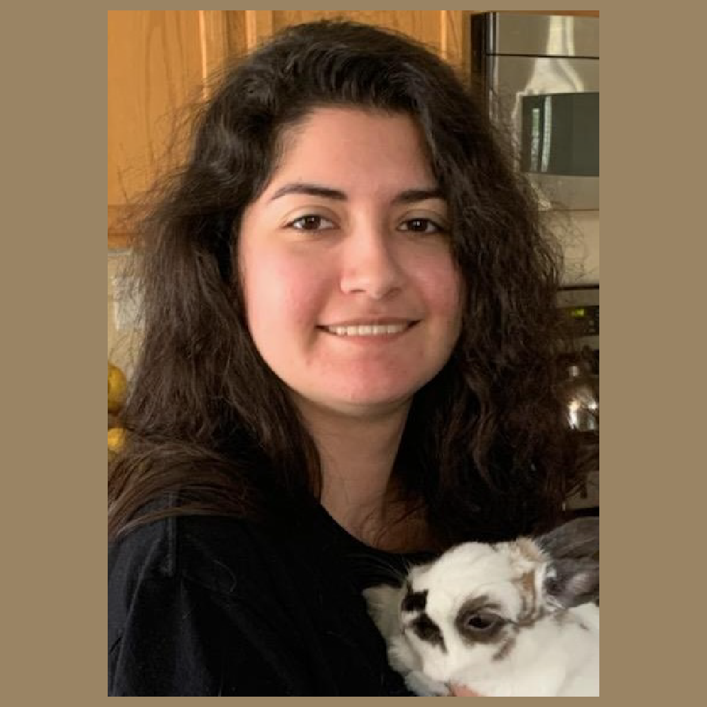

It's Here
Artist Statement
It’s Here shows illness as a twisted form of a human who stands in the background haunting a person. This short film follows someone who is diagnosed with a serious illness. Even when the illness in the person is gone, it haunts the family.
As someone fortunate enough to be healthy their entire life and have their family have no health issues, it's a gut-retching emotion to discover that a close family member has been diagnosed with a serious health issue. It also hurts when it is disclosed to you later than the other members to keep your peace of mind. To learn that the illness can also be genetic is devastating to hear about. The situation puts one’s mind into overdrive with questions of how serious it is, what is the treatment plan, and whether it will be affordable.
This film was made using Blender and Substance Painter to make the 3D models and textures of the family member and the illness and render the animations.


Exhibition
Sabrina Cordera
| Bio | Sabrina Cordera is a BFA Digital Media art major at San Jose State University who uses her art to create fantastical 3D art. Originally a Graphic Design major, she uses her past experiences in that field to build her art in the digital space. She creates bold and experimental art using coding, Blender, and digital drawing programs. She takes inspiration from cartoons, life experiences, and stories from others to build the foundation of her art. She aims to bring her art and creativity into the gaming industry. |
| Contact |